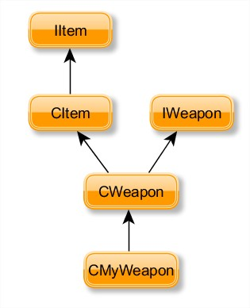
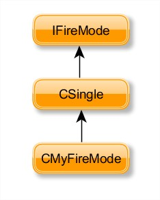
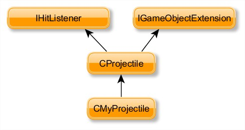
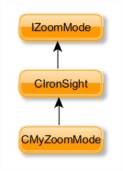
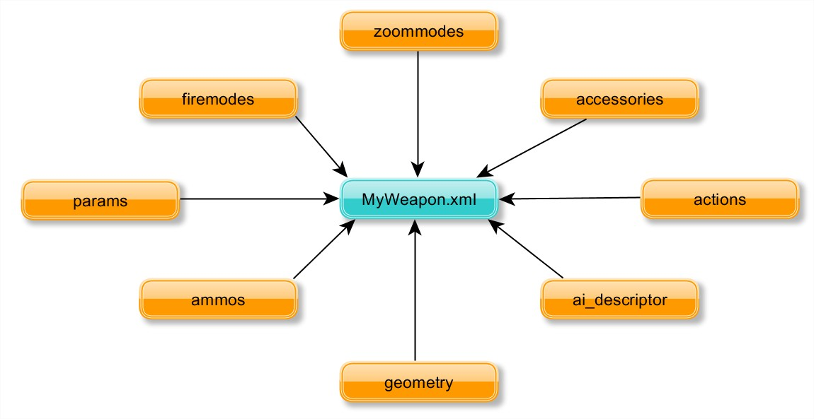

Overview
A weapon is an item which contains the four following components:
- A Weapon Class, which defines the general logic behind your weapon (What happens when you pick up the weapon?, What happens when you drop the weapon?, ...).
- A Fire Mode Class, which defines all kinds of fire parameters like recoil, effects, etc.
- A Projectile Class, which defines for example the logic when hitting another object.
- A Zoom Mode Class, which defines how to handle different zoom steps for your weapon.
The core functionality is implemented in C++ , but these components read the data stored inside XML script files located in: <Game_Folder>/Scripts/Entities/Items/Weapons.
Chapters:
Related Pages:
Weapon Class
A new weapon class can be added by implementing the CItem and IWeapon interfaces. A basic weapon implementation is supplied in the GameDLL project which provide the most commonly required weapon functionality:
class CMyWeapon : public CItem, public IWeapon
{
// IItem, IGameObjectExtension
virtual bool Init(IGameObject * pGameObject);
virtual void InitClient(int channelId) { CItem::InitClient(channelId); };
virtual void Release();
//...other IItem, IGameObjectExtension methods
// IWeapon
virtual void StartFire();
virtual void StartFire(const SProjectileLaunchParams& launchParams);
virtual void StopFire();
virtual bool CanFire() const;
virtual bool CanStopFire() const { return true; }
//... other IWeapon methods
}
When implementing a new weapon class, it's recommended to derive from the CWeapon class. The following functions from CWeapon are the most common ones overridden to provide new gameplay functionalities:
Functions | Description |
|---|---|
CWeapon::OnAction() | CWeapon already implements the common weapon action possibles like attack, reload, zoom and changing the fire mode. A new weapon requiring new actions from the player should override this function. |
CWeapon::Select() | This function is called when the actor select/deselect the weapon as his current item. Any code which modifies the camera/rendering settings should be placed in this function. |
CItem::CanPickUp() | The CItem implementation will make sure that the action does not already carry this weapon. When overriding this function, it is possible to add conditions which rule if the actor is allowed to pickup the weapon. |
CItem::PickUp() | Should handle adding the weapon to the actor inventory. Please note that after CItem::PickUp has been called, it's no longer possible to refuse the actor from picking up the weapon. The appropriate code to validate the actor from taking the weapon should be placed in the CanPickUp() function. |

The final step for your custom weapon, to be useable in the weapon xml file, is to register it in the Game Factory (Code\Game\GameDll\GameFactory.cpp), the central point to register new Game Objects:
#include "MyWeapon.h"
//...
void InitGameFactory(IGameFramework *pFramework)
{
//...
REGISTER_FACTORY(pFramework, "MyWeapon", CMyWeapon, false);
//...
}
Fire Mode Class
The GameSDK example code already includes many unique fire modes:
- Automatic
- AutomaticShotgun
- Burst
- Charge
- Detonate
- LTagSingle
- Melee
- Plant
- Rapid
- Shotgun
- Single
- Spammer
- Throw
In case these fire modes aren't sufficient, it's possible to implement a new fire mode by deriving from the IFireMode interface:
class CMyFiremode : public IFireMode
{
virtual void Init(IWeapon *pWeapon, const struct IItemParamsNode *params, uint32 id);
virtual void PostInit();
virtual void Update(float frameTime, uint32 frameId);
virtual void PostUpdate(float frameTime);
virtual void Reload(int zoomed);
//...other IFireMode methods
}
In most of the cases, deriving from the existing CSingle class should simplify this process. If this approach is followed, the following functions are usually the only ones needed to override:
Function | Description of the functionalities already provided by CSingle |
|---|---|
IFireMode::Activate() | Triggers the appropriates effects and sounds, resets state variables. |
IFireMode::CanFire() | Performs various tests to be sure ammunition are still available and that the weapon isn't overheating. |
IFireMode::CanReload() | Search the in inventory to be sure the actor carries the clips for ammunition required. |
IFireMode::StartFire() | Triggers the appropriates effects and sounds, performs hit computations. |
IFireMode::Update() | Performs various frame dependent computations for different weapon features including auto-aim, zoom, recoil and heat accumulation. |

The final step for your custom fire mode, to be useable in the weapon xml file, is to register it in the Weapon System implementation (Code\Game\GameDll\WeaponSystem.cpp):
CWeaponSystem::CWeaponSystem(CGame *pGame, ISystem *pSystem)
: m_pGame(pGame),
m_pSystem(pSystem),
m_pItemSystem(pGame->GetIGameFramework()->GetIItemSystem()),
m_pPrecache(0),
m_reloading(false),
m_recursing(false),
m_frozenEnvironment(false),
m_wetEnvironment(false),
m_tokensUpdated(false)
{
//...
RegisterFireMode("MyFireMode", &CreateIt<CMyFireMode, IFireMode>);
//...
}
Projectile Class
The CProjectile class implemented in the GameDLL project provides most of the functionality needed. It is possible to extend this class by deriving from it, for example to implement new functionality for homing missiles or to have a new class of explosives.
When deriving from CProjectile, the following functions should be able to give enough flexibility to expand its gameplay features.
Functions | Descriptions |
|---|---|
IGameObjectExtension::HandleEvent() | Function used to handle game events, the ideal location to deal with collisions. |
CProjectile::Launch() | Provides a way to adjust or setup any functionality before the projectile is shot by the weapon. |
CProjectile::Update() | After the projectile was launched, this function is called at every frame until the projectile reaches its destination. |
CProjectile::SetDestination() | If the weapon has any auto-aiming capabilities, this function will be called with the world position of the target. |
CProjectile::SetDestination(targetId) | If the weapon has any auto-aiming capabilities, this function will be called with entity id of the locked target. |

The final step for your custom projectile is to register it in the Weapon System implementation (Code\Game\GameDll\WeaponSystem.cpp):
CWeaponSystem::CWeaponSystem(CGame *pGame, ISystem *pSystem)
: m_pGame(pGame),
m_pSystem(pSystem),
m_pItemSystem(pGame->GetIGameFramework()->GetIItemSystem()),
m_pPrecache(0),
m_reloading(false),
m_recursing(false),
m_frozenEnvironment(false),
m_wetEnvironment(false),
m_tokensUpdated(false)
{
//...
REGISTER_PROJECTILE(MyProjectile, CMyProjectile);
//...
}
Zoom Mode Class
The SDK example already includes the following zoom modes: IronSight and Scope. In case you need a customized zoom mode for your weapon it's possible to implement a new zoom mode by deriving from the IZoomMode interface:
class CMyZoomMode : public IZoomMode
{
virtual bool CanZoom() const;
virtual bool StartZoom(bool stayZoomed = false, bool fullZoomout = true, int zoomStep = 1);
virtual void StopZoom();
virtual void ExitZoom(bool force=false);
//...other IZoomMode methods
}
In most of the cases, deriving from the existing CIronSight class should simplify this process. If this approach is followed, the following functions are usually the only ones needed to override:
Function | Description of the functionalities already provided by CIronSight |
|---|---|
CIronSight::OnEnterZoom() | Triggers when entering zoom mode. |
CIronSight::OnLeaveZoom() | Triggers when leaving zoom mode. |
CIronSight::OnZoomStep() | Triggers when switching the actual zoom step. |
IZoomMode::UpdateFPView() | Updating/Changing any first person view parameters should go here. |

The final step for your custom zoom mode is to register it in the Weapon System implementation (Code\Game\GameDll\WeaponSystem.cpp):
CWeaponSystem::CWeaponSystem(CGame *pGame, ISystem *pSystem)
: m_pGame(pGame),
m_pSystem(pSystem),
m_pItemSystem(pGame->GetIGameFramework()->GetIItemSystem()),
m_pPrecache(0),
m_reloading(false),
m_recursing(false),
m_frozenEnvironment(false),
m_wetEnvironment(false),
m_tokensUpdated(false)
{
//...
RegisterZoomMode("MyZoomMode", &CreateIt<CMyZoomMode, IZoomMode>);
//...
}
The Weapon XML
Creating the final weapon is completely done in an easy to edit XML file, which should be stored in <Game_Folder>/Scripts/Entities/Items/Weapons/.
A good starting point for creating your own weapon XML implementation is to use the shipped Rifle.xml script. It already includes everything you need to have a usable and realistic weapon. More details about the general structure of a weapon XML implementation can be found via comments inside the Rifle.xml weapon example.
